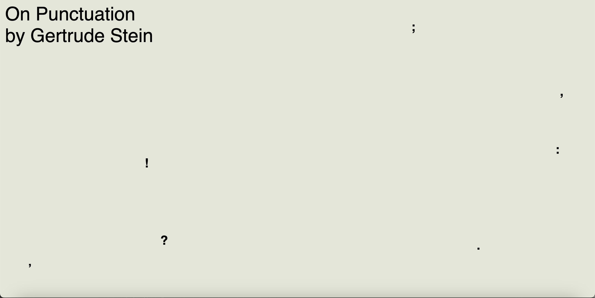
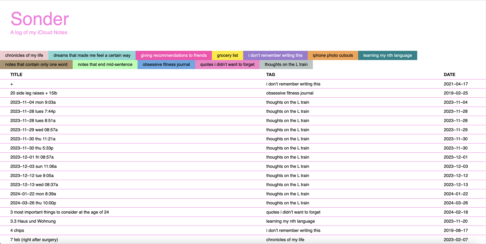

In Spring 2024, Jennifer Lee took Core 2: Interaction instructed by Sasha Portis and Bryant Wells.
In Sasha’s class, she completed 3 projects and many workshops in class.
For
P1: Stories as Networks

, she created a linear story web for Gertrude Stein’s ‘On Punctuation’. For
P2: Elastic Collection

, she created a log of her iCloud notes. And finally, for P3: Real-Time (still working...), she is creating a time-sensitive save-the-date website for an event called ‘Earth Night’ at House of Yes.
In Bryant’s class, she completed 6 projects and 7 workshops in class.